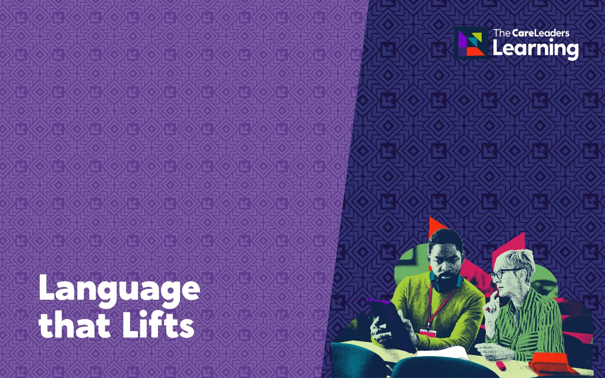
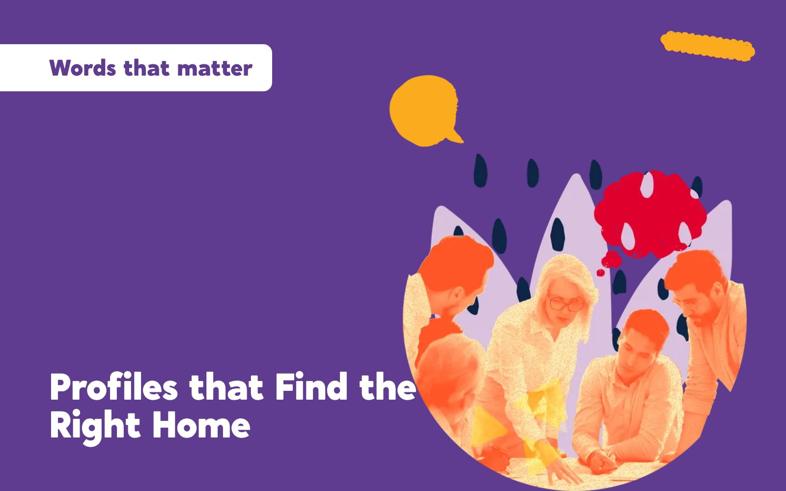

Write it to the child.
For social workers, residential key workers, personal advisers and IROs who write about children in care. People learn to write case notes, review records and life story pieces to the child, keeping the facts and analysis a record needs while making it something the child could read at 8 or at 40. Everyone brings a real piece of their own writing and leaves with it rewritten.
- Length
- 6 hours face to face, usually 10am to 4pm. 2 hours live online
- How
- Face to face or live online
- Group
- Up to 60 people
- For
- Social workers, residential staff, personal advisers and IROs

Under the Care Planning, Placement and Case Review (England) Regulations 2010, a child’s case record is kept until their 75th birthday, and care-experienced adults can ask to read it, often to understand their own story. What they usually find is written for the organisation: risk, process and jargon. UCL’s MIRRA research with care-experienced adults found that records mainly serve services, and that children’s voices and feelings are often missing or misrepresented. This workshop starts where they do, reading a file from the child’s side. Then it gives you the thinking behind writing to the child and spends most of the time on your own writing.
What changes
- Write case notes and reports addressed to the child, in words they would understand, without losing facts or analysis.
- Separate what they saw, what was said and what they think, so a reader can tell fact from opinion.
- Explain decisions in the record, including the child’s view and the reasons when the decision went another way.
- Write about hard events truthfully, without blame or labels.
- Use shared team templates and prompts, so the change holds when staff move on.
- Records and letters they can read and recognise themselves in.
- Knowing why decisions about their lives were made, and that their view was written down.
- Finding the hard parts of their history written honestly and kindly.
Story
- Describe what a care-experienced adult is looking for when they read their file, and how institutional language can leave them without answers.
- Recognise words in their own records that label, blame or confuse a child reading them.
Theory
- Explain why a care record is also a child’s history, including their right to see it and the rule that it is kept until their 75th birthday.
- Explain, using Laura Lundy’s model of participation (2007), why a child should be told in writing how their view was taken into account.
Action
- Rewrite a piece of their own recording addressed to the child, keeping observation, the child’s words and analysis separate, and test it against a checklist.
- Write about a painful event, such as why a child came into care, truthfully and without blame, and plan how their team will keep the change going through templates, supervision and audit.
- Children’s social workers, team managers and practice supervisors.
- Residential key workers and children’s home managers.
- Personal advisers and leaving care workers.
- Independent reviewing officers, who write review records and letters to children.
- Supervising social workers and foster carers who keep daily records.
- No previous training is needed. Up to 60 people, working at tables so everyone gets feedback on their rewrite from peers and the facilitator.
Session by session
 Story
Story Theory
Theory Action
Action
Four parts. Every part opens with a story about a child or adult reading what was written about them, gives you the thinking behind it, and ends with people writing. The stories are composites. They draw on real experiences of care but are not one person. Open a part to see what happens.
1Read it back
Story. Skye, 19, gets her file. The entry for the week she came into care says “Mother unable to prioritise Skye’s needs. Section 20 agreed.” What she wanted to know was whether her mum loved her and whether anyone asked how she felt.
Theory. UCL’s MIRRA project (2017 to 2019) worked with care-experienced adults and found records are mainly written to serve services, with children’s voices and feelings often missing. Under the Care Planning, Placement and Case Review (England) Regulations 2010 the record is kept until the child’s 75th birthday, so it is also their history.
Action. Language that Cares. Each person reads an anonymised extract as if they were the child it describes and marks every word that labels, blames or confuses. The group builds a list of phrases to stop using and what to write instead, drawing on TACT’s Language that Cares (2019). Each person then marks a piece of their own writing the same way.
By the end of this part people can read a record from the child’s side and name the words that would hurt or confuse them.
 You leave with A list of words and phrases your team will stop using, and what to write instead.
You leave with A list of words and phrases your team will stop using, and what to write instead.
2Say why
Story. Harvey, 13, gets a letter after his review: “It was agreed that contact will reduce to monthly.” He wants to know who agreed, whether anyone told them what he said, and why.
Theory. Laura Lundy’s model of participation (2007) says children need space, voice, an audience and influence, and that includes being told how their view was weighed and why the decision went the way it did. Writing to the Child puts that into the record: “you told me…, we decided…, because…”.
Action. Using before and after examples, people practise writing one decision to the child: what was decided, what the child said, how it was taken into account, and the reasons. Observation, the child’s own words and the worker’s analysis are kept clearly apart. Partners then read each other’s decision back as the child would.
By the end of this part people can explain a decision in writing so a child could understand it, including their view and the reasons for the outcome.
 You leave with Before and after examples, and a short checklist to test any record against.
You leave with Before and after examples, and a short checklist to test any record against.
3The rewrite
Story. Poppy, 8, is making her life story book with her foster carer and asks why she can’t live with her dad. The only words anyone has are the ones in the court report.
Theory. Life story work, set out by Tony Ryan and Rodger Walker in their guide for people working with children, rests on telling children the truth about their history in a way they can hold at their age. Writing to the child applies that to every record: honest about what happened, without blame or labels.
Action. Everyone rewrites a real piece of their own writing, with identifying details removed, addressed to the child. Facilitators and peers give feedback against the checklist, with extra time on the hardest parts, such as why a child came into care. Everyone then redrafts once more using the feedback.
By the end of this part people can rewrite a case note, report or life story piece addressed to the child, and write about a painful event truthfully and kindly.
 You leave with Your own case note, report or life story piece, rewritten and ready to use.
You leave with Your own case note, report or life story piece, rewritten and ready to use.
4Make it stick
Story. Corey, 15, gets a letter from his new social worker. It reads like the ones he got before. The team that went on the training has mostly moved on.
Theory. Implementation research (Fixsen and colleagues, 2005) found that training on its own rarely changes practice. Change holds when it is built into the tools people use every day and backed by coaching and supervision.
Action. Teams agree templates for letters to children, decide where prompts go in the recording system they already use, and plan how managers will check for it in supervision and case audit.
By the end of this part people can plan where writing to the child sits in their templates, recording system and audit, and who checks it.
 You leave with Team templates and prompts from the workbook, and a plan for checking them in audit.
You leave with Team templates and prompts from the workbook, and a plan for checking them in audit.
Choose how you run it
We come to your office or a venue you choose for a training day, 10am to 4pm. Each person works on their own anonymised piece of writing, with most of the day spent rewriting it with feedback.
- Length
- One day, 10am to 4pm
- Group
- Up to 60 people
- You provide
- A room set up for small-group work with tables, a screen with HDMI, and laptops or printed copies of the pieces people bring
A 2-hour live session on Teams or Zoom, covering the core of the course: the key story, theory and tool from each part, with the workbook and on-demand course to go deeper. People start their rewrite in breakout rooms and share drafts on screen for feedback, then finish it with the workbook afterwards.
- Length
- One 2-hour live session on Teams or Zoom
- Group
- Up to 60 people
- You provide
- Teams or Zoom with breakout rooms, cameras on for the activities, and each person’s anonymised piece ready to share
Included for every delegate: a workbook to keep, the recording of the session for 12 months, an interactive on-demand course on The Care Leaders Online for 12 months, and a certificate of completion.
Over 60 people, we bring a second facilitator so everyone still gets the time the activities need.
Grew from our recording training, delivered to about 200 people at a Devon conference in September 2026.
Questions commissioners ask
How is the course structured?
Four parts, each built the same way. Story: someone reading what was written about them, such as Skye reading her file at 19 or Harvey trying to work out who decided his contact. Theory: the thinking behind it, from the MIRRA research on records to Laura Lundy’s model of participation and life story work. Action: writing, with most of the time spent rewriting a piece of your own work with feedback. Face to face it is a 6-hour day, 10am to 4pm. Live online it is one 2-hour session covering the key story, theory and tool from each part, with the workbook and on-demand course to go deeper.
How is this different from A guide to good recording?
A guide to good recording covers the whole record: fact and opinion, analysis and chronologies. This workshop goes deeper on one thing, writing to the child, including letters, review records and life story pieces, and most of the time is spent on your own writing.
Does writing to the child make records less professional?
No. The facts, the analysis and the accountability stay. What changes is who the record speaks to and how it explains things. Writing for a child usually makes a record clearer and more precise, not softer.
What should people bring?
A real piece of their own writing, such as a case note, a report extract or a life story piece. Remove names, dates of birth, addresses and anything else that could identify the child. The rewrite works best on real work, not a made-up example.
Will it fit our recording policy and case management system?
Yes. We read your recording policy and templates beforehand and work within them. Part 4 looks at where prompts can sit in the forms your staff already use. Managers and IROs are welcome alongside practitioners, and it helps when they hear the same message.
Who delivers it, and how do you price it?
People with lived experience of care and professional experience of children’s services. The course was designed by Luke Rodgers BEM. We quote per cohort, based on numbers, format and how much tailoring you want, and send you a clear quote.
Often booked with
 Words that matterA guide to good recordingTraining and a workbook so records are accurate, useful and written with the child in mind.6 hours face to face, 2 hours online
Words that matterA guide to good recordingTraining and a workbook so records are accurate, useful and written with the child in mind.6 hours face to face, 2 hours online
Words that matterLanguage that LiftsThe words we use about children in care, and the ones that help them feel like children.6 hours face to face, 2 hours online
Words that matterProfiles that Find the Right HomeWriting and reading referrals and profiles that give children the best chance of the right match.6 hours face to face, 2 hours onlineTalk to us about From Case Note to Letter
Tell us who it is for and roughly how many people. We will shape it around your service and send you a quote.